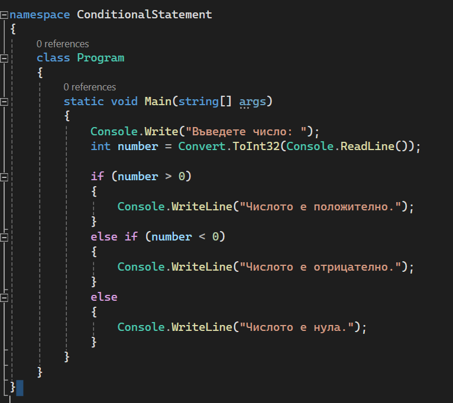

Добре дошли на първия си урок по програмиране на C#! В този урок ще се запознаете с основите на програмирането на C#, включително как да създадете и стартирате проста програма. Нека започнем.
C# е модерен, обектно-ориентиран програмен език, разработен от Microsoft. Той се използва широко за разработка на уеб приложения, настолни приложения, игри и много други. C# е част от .NET екосистемата и предлага мощни инструменти за разработка.
Преди да можете да пишете и стартирате C# програми, ви трябва хубава програма за писане и аз ви препоръчвам Visual Studio 2022.След като сте изтеглили програмата трябва в нея да изтеглите добавката за кодиране в конзола и след като се изтегли вие сте готови правене на вашата първа програма.
Сега нека създадем проста C# програма, която отпечатва "Hello, World!" на екрана.
В Visual Studio:
C# поддържа няколко основни типа данни, включително:
C# включва различни контролни структури като цикли и условни конструкции.
В този урок научихте основите на C#, включително настройка на вашата среда, писане и стартиране на проста програма, и разбиране на основния синтаксис и концепции. Практикувайте писането на още прости програми, за да се запознаете с тези концепции.
Приятно програмиране!